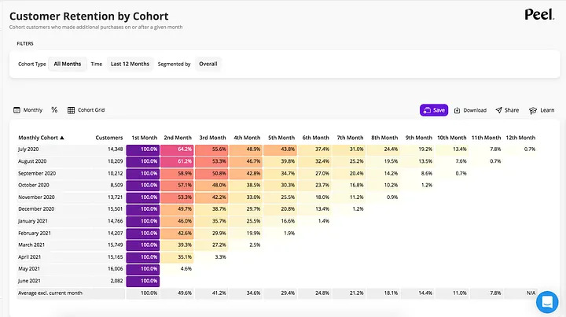
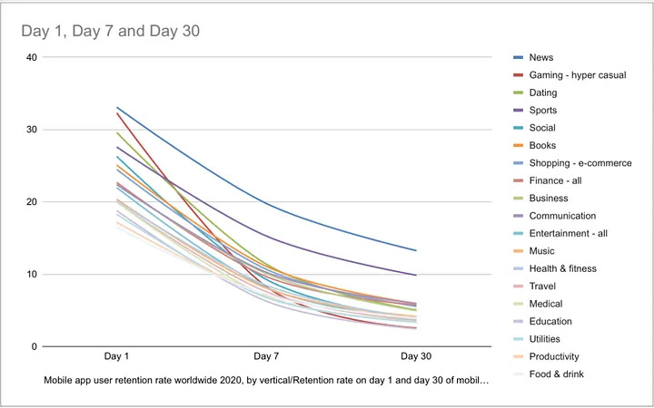

Introduction
Retention rate is one of the major KPI metrics in many businesses. The concept isn’t too complicated, but it involves many details and is important for understanding how your business performs. It is also a prerequisite for calculating Customer Lifetime Value, known as CLV or LTV. In this long post, I will split the content into three sections: Evaluation Steps, Charts, and SQL Code. Hopefully this structure will make it easier for readers to digest.
Evaluation Steps
The major steps are as follows: #### Step 1 Identify the “cohort.” A cohort could be a group of people who made purchases through the same marketing campaign or event, or a group of people who subscribed to a service within a certain time period (e.g., the same day or the same month).
Depending on your business, the challenge is that people in different cohorts have different purchasing or revisiting cycles, so defining your cohort is an important first step. Usually, cohorts are either event‑based or time‑based, but sometimes additional categorical variables are added to narrow down the groups. Keep in mind that the more variables you include, the more complex the SQL code and results will become.
Using the gaming industry as an example, we usually use player signup date as the cohort base (time‑based). Each day, a number of people join the game, and each day becomes a different cohort. Retention rate is evaluated day by day. It is also possible to add other variables—for example, which countries the cohorts belong to, which marketing campaigns they came from, or whether they are payers or non‑payers. These additional variables make the SQL code more complex to write and read. (I will explain this later in the SQL section.)
Step 2
Understand the math formula, which is straightforward:
Retention Rate = ( number of people in the same cohort who revisited during the period / number of people in the same cohort at the start of the period) × 100
Although the formula is simple, the challenge is calculating the rate for each cohort from its initial day through each of its future days. For example, on July 1st, we have 100 people joining the business, usually labeled as day‑1. (Note that some people use day‑0 for the very first day, which is assumed to have a 100% rate as the base. This is often omitted in charts. If you see a day‑1 value below 100% in someone else’s work, it usually means they used day‑0 as the starting label. It’s a personal preference; I prefer day‑1.)
On the following day, July 2nd, 50 people from the same cohort revisit. This is labeled as day‑2, and the retention rate is 50/100 = 50%.
On July 3rd, 20 people revisit, labeled as day‑3, giving a retention rate of 20/100 = 20%. And so on for future days. Keep in mind that this is always referring to the same cohort that joined on July 1st. A new cohort joins on July 2nd, and July 3rd becomes that cohort’s day‑2, and so forth. As each new day is added, the volume of data and calculations increases quickly.
By the way, “churn rate” is the reverse of retention rate, calculated as:
Churn Rate = 1 − Retention Rate
Churn rate is another common term you will encounter when working with retention metrics.
Step 3
From the results in Step 2, we can use visualization tools to create charts. In my experience, retention charts are not easy to interpret at first glance. You will need practice to get used to them, and you will often need to teach stakeholders how to read them as well. There are three major chart types commonly used to display retention rate. All three are popular, but each has its downsides, which I will demonstrate below.
Charts

Based on the calculation in Step 2, the first popular chart (above) is a stair‑like tabular chart. Each row represents a cohort, and each column and value represents the retention rate for each subsequent day or period. Heat‑map colours are usually applied to make the numbers easier to read; without them, the table can look cluttered due to the volume of data.

The second chart (above) is a downward‑sloping line chart derived from the tabular format. Each line represents a cohort and its retention rate across each following day or defined period. Note that in this example, cohorts are defined by app genre (event‑based) rather than by join date. This highlights the importance of clearly defining your cohort before running the analysis. The downside of this chart is that as more cohorts accumulate, the number of lines increases and they begin to overlap, making the chart difficult to interpret. This is where the third chart becomes useful.

The third chart (above) provides insight into long‑term performance based on the day‑n line selected in the visualization design. I personally prefer this chart when presenting retention information to stakeholders. Each line represents a specific day‑n metric. For example, the blue line is Day‑1, the red line (Week 1) is Day‑7, and the green line (Month 1) is Day‑30. The blue line shows Day‑1 retention rates across different cohorts. Vertically, each point on the x‑axis corresponds to a cohort. Using 2020–03 as an example, the blue point at roughly 80% represents its Day‑1 retention rate, the red point at about 65% represents its Day‑7 rate, and the green point at about 55% represents its Day‑30 rate. In other words, the vertical stack of points for a given cohort shows its retention performance across different time intervals.
From this chart, we can reasonably conclude that the 2020–03 cohort is healthier than earlier cohorts (from 2019–07 to 2020–02), as it shows stronger Day‑1, Day‑7, and Day‑30 retention. The main challenge with this chart is that reading cohorts vertically can feel unintuitive at first. However, once you get used to it, it becomes a very effective way to compare retention performance across cohorts.
SQL (Written in Google BigQuery Environment)
I usually structure the SQL queries into two sections. Section 1 builds the base table that contains all necessary variables, and this table is typically saved as a temporary table for later use. This allows me to experiment with different query setups in Section 2 without rerunning the Section 1 queries and consuming unnecessary read resources. However, if you already know exactly what you need, you can combine the queries from all sections into a single script.
Section 1
-- save the result to a table for later use
truncate table `mid_retention_data`;
insert into `mid_retention_data`
with join_date as (
-- find out each user's first join date, more variables add complexity
-- each user should have 1 row only
select user_id
, user_join_date
-- you can add all potential categorical variables first
-- then in Section2, you are free to select desired ones only
, case
when campaign_id in (123, 456, 789) then 'special'
when campaign_id in (100, 200) then 'organic'
else 'regular'
end as campaign_type
, case
when country = 'KR' then 'korea'
when country = 'JP' then 'japan'
when country = 'US' then 'us'
else 'others'
end as country_others_vs_tier1
, case
when all_iap_amount > 0 then 'payer'
else 'non_payer'
end as payer_flag
from `user_metric_table`
)
, log_date as (
-- find out each user's all login dates
-- eg// a user visits and revisits for 30 days then there are 30 rows
-- the table size will be large if long period and millions of users
select distinct user_id
, login_date
from `user_login_data`
)
-- join two tables together and calculate the period apart
-- between each login date and first date
select distinct b.user_id
, b.user_join_date
, b.campaign_type
, b.country_others_vs_tier1
, b.payer_flag
, a.login_date
-- their first login date should be the same as join date
-- use date_diff() to calculate day-n information
-- + 1 or not depends on you want the first day as 0 or 1, and I prefer 1
, date_diff(a.login_date, b.user_join_date, day) + 1 as day_num
from log_date as a
inner join join_date as b on a.user_id = b.user_id
-- we can use order by to briefly check if results meet expectation
-- order by b.user_id, a.login_date
;I have added additional variables such as campaign_type, country, and payer_flag. These will increase the complexity in the following sections. However, because the results are saved to a middle table, I can include as many potentially useful categorical variables as needed and choose only the relevant ones in Section 2. At this stage, after running the short set of queries below, you could technically export the data to visualization tools like Tableau or Power BI—but there is a pitfall to be aware of.
Section 2
with base_table as (
select distinct user_id
, user_join_date -- represent cohorts
-- say I stored 10 additional categorical variables in the middle table
-- I can only select fewer variables here depending on goals.
, campaign_type
, country_others_vs_tier1
, payer_flag
, day_num
from `mid_retention_data` -- saved middle table from Secion1
)
, data_per_day as (
select user_join_date-- represent cohorts
, campaign_type
, country_others_vs_tier1
, payer_flag
-- add or remove day_n based on your requirements in lines below
-- these calculate the retained user counts on day_n for each cohort
-- day_1 is the first day for each cohort
, sum(case when day_num = 1 then 1 else 0 end) as day_1
, sum(case when day_num = 2 then 1 else 0 end) as day_2
, sum(case when day_num = 3 then 1 else 0 end) as day_3
, sum(case when day_num = 4 then 1 else 0 end) as day_4
, sum(case when day_num = 5 then 1 else 0 end) as day_5
, sum(case when day_num = 6 then 1 else 0 end) as day_6
, sum(case when day_num = 7 then 1 else 0 end) as day_7
, sum(case when day_num = 14 then 1 else 0 end) as day_14
, sum(case when day_num = 30 then 1 else 0 end) as day_30
, sum(case when day_num = 90 then 1 else 0 end) as day_90
, sum(case when day_num = 183 then 1 else 0 end) as day_183
, sum(case when day_num = 365 then 1 else 0 end) as day_365
from base_table
group by user_join_date, campaign_type, country_others_vs_tier1, payer_flag
)
, result_data as (
SELECT user_join_date
, campaign_type
, country_others_vs_tier1
, payer_flag
, CASE WHEN day_1 IS NOT NULL THEN day_1 ELSE 0 END as d1
-- add or remove dn based on your requirements in lines below
-- these calculate the retention rate on dn for each cohort
-- day_1 is the denominator for following days (retention rate formula)
, CASE WHEN day_1 IS NOT NULL THEN
SAFE_DIVIDE(day_2, day_1) ELSE 0 END as d2
, CASE WHEN day_1 IS NOT NULL THEN
SAFE_DIVIDE(day_3, day_1) ELSE 0 END as d3
, CASE WHEN day_1 IS NOT NULL THEN
SAFE_DIVIDE(day_4, day_1) ELSE 0 END as d4
, CASE WHEN day_1 IS NOT NULL THEN
SAFE_DIVIDE(day_5, day_1) ELSE 0 END as d5
, CASE WHEN day_1 IS NOT NULL THEN
SAFE_DIVIDE(day_6, day_1) ELSE 0 END as d6
, CASE WHEN day_1 IS NOT NULL THEN
SAFE_DIVIDE(day_7, day_1) ELSE 0 END as d7
, CASE WHEN day_1 IS NOT NULL THEN
SAFE_DIVIDE(day_14, day_1) ELSE 0 END as d14
, CASE WHEN day_1 IS NOT NULL THEN
SAFE_DIVIDE(day_30, day_1) ELSE 0 END as d30
, CASE WHEN day_1 IS NOT NULL THEN
SAFE_DIVIDE(day_90, day_1) ELSE 0 END as d90
, CASE WHEN day_1 IS NOT NULL THEN
SAFE_DIVIDE(day_183, day_1) ELSE 0 END as d183
, CASE WHEN day_1 IS NOT NULL THEN
SAFE_DIVIDE(day_365, day_1) ELSE 0 END as d365
FROM data_per_day
)
-- unpivot is for viz design so we can use retained_days as filter
-- try it yourself with and without unpivot and you will understand why
SELECT user_join_date
, campaign_type
, country_others_vs_tier1
, payer_flag
, d1 as new_user_count
, retained_days
, retention_rate
FROM result_data
unpivot
(
retention_rate
for retained_days in (d2, d3, d4, d5, d6, d7, d14, d30, d90, d183, d365)
) unpiv
;In Section 2, here are the key points to pay attention to:
Although it requires some manual work, you can add or remove specific day numbers in the analysis. Common practice includes using d2, d3, d7, d14, d30, d90, half‑year, or full‑year metrics, depending on your business requirements. This is also why Section 2 is less flexible than Section 1. For example, if a stakeholder asks you to display the Day‑17 metric, you would need to add a new line to the query and re‑run both the queries and the visuals. Fortunately, such requests are extremely rare.
The data_per_day and result_data tables in Section 2 form the backbone of the stair‑like tabular chart shown earlier. The unpivot process helps you create the second and third line charts by using retained_days as a filter in your visualization tool. Try building your visuals with and without the unpivot step—you’ll quickly see why including it makes the design much more convenient.
In the Complex Version of Section 2, the more variables you include, the more challenging it becomes to organize your visualizations. Typically, we compare one or two variables (three in my example). Adding more variables can make the charts confusing and harder to interpret.
Conclusion
I hope these points help you analyze retention rate more effectively. I recommend testing with your own data—you’ll gain a much clearer understanding when working with your specific use case.